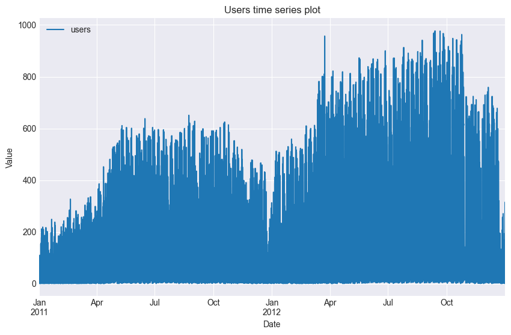
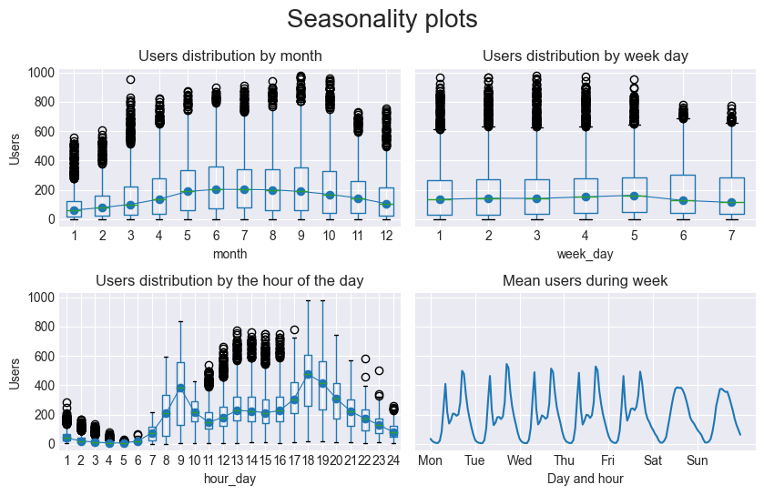

01: Exploratory Time Series Analysis#
Index:
Structural assessment of time series (ruptures package)
Analysis and segmentation of non-stationary signals. Implemented algorithms include exact and approximate detection for various parametric and non-parametric models
The purpose is to find points in space (if they exist) where the structure of the signal breaks and assumes a different behavior usually due to an exogenous variable
Visualize Moving Average and Autoregressive Components
Visualize the behavior of the time series with dispersion and distribution analysis across days of the week and months of the year
import pandas as pd
from skforecast.datasets import fetch_dataset
import matplotlib.pyplot as plt
from statsmodels.graphics.tsaplots import plot_acf
from statsmodels.graphics.tsaplots import plot_pacf
import plotly.graph_objects as go
import plotly.io as pio
import plotly.offline as poff
import numpy as np
import ruptures as rpt
pio.templates.default = "seaborn"
poff.init_notebook_mode(connected=True)
plt.style.use('seaborn-v0_8-darkgrid')
data = fetch_dataset('bike_sharing', raw=True)
data = data[['date_time', 'users']]
data['date_time'] = pd.to_datetime(data['date_time'], format='%Y-%m-%d %H:%M:%S')
data = data.set_index('date_time')
data = data.asfreq('H')
data = data.sort_index()
data.head()
bike_sharing
------------
Hourly usage of the bike share system in the city of Washington D.C. during the
years 2011 and 2012. In addition to the number of users per hour, information
about weather conditions and holidays is available.
Fanaee-T,Hadi. (2013). Bike Sharing Dataset. UCI Machine Learning Repository.
https://doi.org/10.24432/C5W894.
Shape of the dataset: (17544, 12)
| users | |
|---|---|
| date_time | |
| 2011-01-01 00:00:00 | 16.0 |
| 2011-01-01 01:00:00 | 40.0 |
| 2011-01-01 02:00:00 | 32.0 |
| 2011-01-01 03:00:00 | 13.0 |
| 2011-01-01 04:00:00 | 1.0 |
data[["users"]].plot(figsize=(10, 6))
plt.xlabel('Date')
plt.ylabel('Value')
plt.title('Users time series plot')
plt.grid(True)

Moving average (365 days)#
moving_average = data[["users"]].rolling(
window=365, # 365-day window
center=True, # puts the average at the center of the window
min_periods=180, # choose about half the window size
).mean() # compute the mean (could also do median, std, min, max, ...)
ax = data.plot(style=".", color="0.5")
moving_average.plot(
ax=ax, linewidth=3, title="Bike Users - 365-Day Moving Average", legend=False,
)
<Axes: title={'center': 'Bike Users - 365-Day Moving Average'}, xlabel='date_time'>
# Model Inputs
points = np.array(data["users"])
# Define and fit model (window with 90 width and l2 loss)
algo = rpt.Window(width=30, model="l2").fit(data["users"])
# Predict breakpoints - either manually or via penalization factor (this example)
breakpoints = algo.predict(pen=np.log(len(points)) * 2 * np.var(points)/2) # just an example, see docs for more information.
# Defining number of break points manually is also possible
# breakpoints = algo.predict(n_bkps=10) # or define number of break points manually
# Display results
rpt.show.display(points, breakpoints, figsize=(10, 6))
plt.title('Change Point Detection: Window-Based Search With Penalty Factor')
---------------------------------------------------------------------------
AttributeError Traceback (most recent call last)
~\AppData\Local\Temp\ipykernel_1300\1868564388.py in ?()
1 # Model Inputs
2 points = np.array(data["users"])
3
4 # Define and fit model (window with 90 width and l2 loss)
----> 5 algo = rpt.Window(width=30, model="l2").fit(data["users"])
6
7 # Predict breakpoints - either manually or via penalization factor (this example)
8 breakpoints = algo.predict(pen=np.log(len(points)) * 2 * np.var(points)/2) # just an example, see docs for more information.
~\AppData\Local\Programs\Python\Python310\lib\site-packages\ruptures\detection\window.py in ?(self, signal)
110 self
111 """
112 # update some params
113 if signal.ndim == 1:
--> 114 self.signal = signal.reshape(-1, 1)
115 else:
116 self.signal = signal
117 self.n_samples, _ = self.signal.shape
~\AppData\Local\Programs\Python\Python310\lib\site-packages\pandas\core\generic.py in ?(self, name)
6200 and name not in self._accessors
6201 and self._info_axis._can_hold_identifiers_and_holds_name(name)
6202 ):
6203 return self[name]
-> 6204 return object.__getattribute__(self, name)
AttributeError: 'Series' object has no attribute 'reshape'
Seasonality plots#
fig, axs = plt.subplots(2, 2, figsize=(8.5, 5.5), sharex=False, sharey=True)
axs = axs.ravel()
# Users distribution by month
data['month'] = data.index.month
data.boxplot(column='users', by='month', ax=axs[0])
data.groupby('month')['users'].median().plot(style='o-', linewidth=0.8, ax=axs[0])
axs[0].set_ylabel('Users')
axs[0].set_title('Users distribution by month')
# Users distribution by week day
data['week_day'] = data.index.day_of_week + 1
data.boxplot(column='users', by='week_day', ax=axs[1])
data.groupby('week_day')['users'].median().plot(style='o-', linewidth=0.8, ax=axs[1])
axs[1].set_ylabel('Users')
axs[1].set_title('Users distribution by week day')
# Users distribution by the hour of the day
data['hour_day'] = data.index.hour + 1
data.boxplot(column='users', by='hour_day', ax=axs[2])
data.groupby('hour_day')['users'].median().plot(style='o-', linewidth=0.8, ax=axs[2])
axs[2].set_ylabel('Users')
axs[2].set_title('Users distribution by the hour of the day')
# Users distribution by week day and hour of the day
mean_day_hour = data.groupby(["week_day", "hour_day"])["users"].mean()
mean_day_hour.plot(ax=axs[3])
axs[3].set(
title = "Mean users during week",
xticks = [i * 24 for i in range(7)],
xticklabels = ["Mon", "Tue", "Wed", "Thu", "Fri", "Sat", "Sun"],
xlabel = "Day and hour",
ylabel = "Number of users"
)
fig.suptitle("Seasonality plots", fontsize=20)
fig.tight_layout()
